This article describes a visualization method that is very helpful in understanding how our universe (reality) actually works. This is not the only method to describe how things work, but I like to think that it is the best one for me personally, and so I have been using it for some time now. Most people tend to pick-up on it’s idea and concept rather readily, and thus it’s really very useful. In this article we will go into more detail on how this visualization method works.
I also get into a glossary of terms that I have been using over these years.
Introduction
The MWI is this big universe of possibilities. And each possibility is a frozen moment (in time) that our consciousness visits momentarily.
So, in reality, our consciousness is constantly moving in and out of different realities. And since each reality is it’s own singular world-line, we can say that we are moving in and out of different world-lines.
Step by step
When a consciousness is injected into our (personal) reality, it enters a (some what) fated life. We do have the illusion of freedom of movement and thought, but in reality there are actually limitations all around us.
The baby enters the world. It cannot walk, speak, crawl or do much of anything. It lies there in it’s crib. Certainly, it might be able to crawl to the edge of the crib, crawl up the side, and get out of the crib.
Let’s look at what this would look like.
The baby obtains consciousness
At some point, the infant will obtain consciousness. For some it is inside the mother. For others it is after being physically birthed. And for many, the consciousness comes and goes in and out of the physical body until it settles in place.
And on the world-line template map, it will look something a little like this…
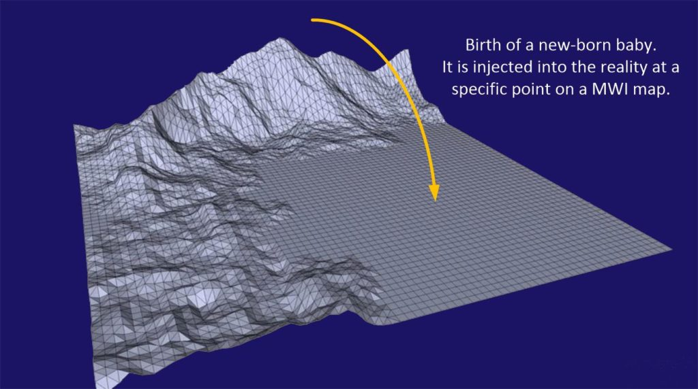
The first few minutes
In the first few minutes, days, months, the freedom of movement is very limited. The consciousness is just learning how to get around. It is just learning how to use it’s body. So there are actual physical limitations that it can do. This is it’s fate.
However, if it pushed itself, and it strove to overcome, it could roll, crawl, move and do other things that are very difficult to do.
Now these things that are very difficult to do are shown on the template map as hills and mountains.
Using the Z-axis we can say that the higher the “mountain”, the harder the effort. While the shallower the depression, the easier the effort.
From the baby point of view it might look like this…
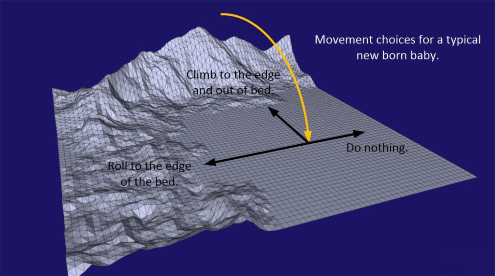
And that is the way it is
As time moves on, the consciousness moves around on this template map. Depending on the personality of the consciousness, it will either take the easy route (which is a fated, go along with the herd mentality), or will become a “hard driver”, pushing and striving to “climb those hills”.
There are many aspects to this. But for now, let’s consider the idea that when you are born, the selection of the pre-birth world-line template will pretty much define your future. You will enter a fated future, and if you did absolutely nothing your future will be as predictable as anything.
But, if you decide to climb “those hills and mountains”, what then?
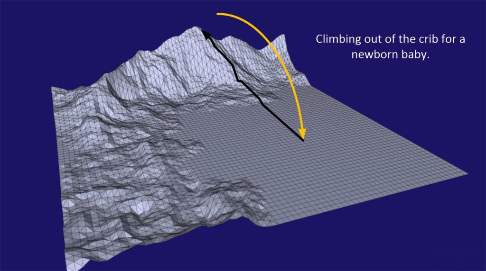
And this is the point of this article
The height of the “mountains” is a measure of effort and deviance from the comfortable normalcy of your pre-birth world-line template. As you move away from the “flat, safe” median, you will (by definition) change.
And, as we all know, change is a good thing.
And change will alter the geography of your pre-birth world-line template.
But…
For most people the changes will not be significant. That is to say that the pre-birth world-line template will still stay pretty much the same. You will “climb that mountain” and then discover other areas that would otherwise be forbidden for you to go to otherwise. However, you would still be on that pre-birth world-line template.
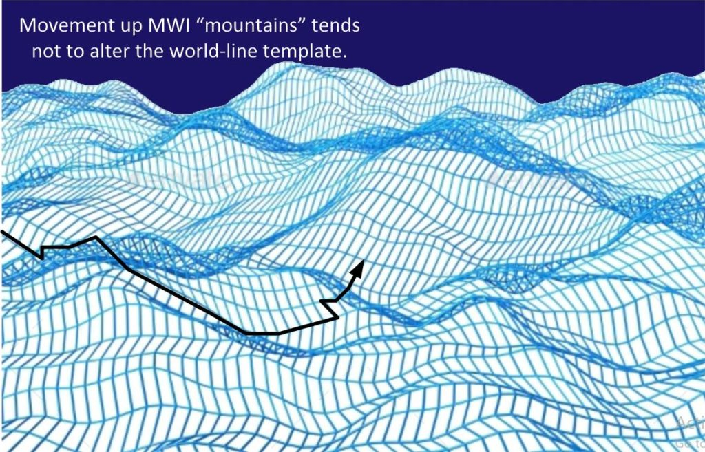
But it does build up “something”
In the quantum world, everything is connected, and all efforts are significant, no matter how tiny or seemingly insignificant. And yes, the movement upwards up the mountains will tend to change the topography of the template somewhat. It will end up making is “softer”, more “gradual”, and “easier”. But none of this is of real significance to the observer.
In other words, the more “mountains” you climb, the “softer” the terrain becomes.
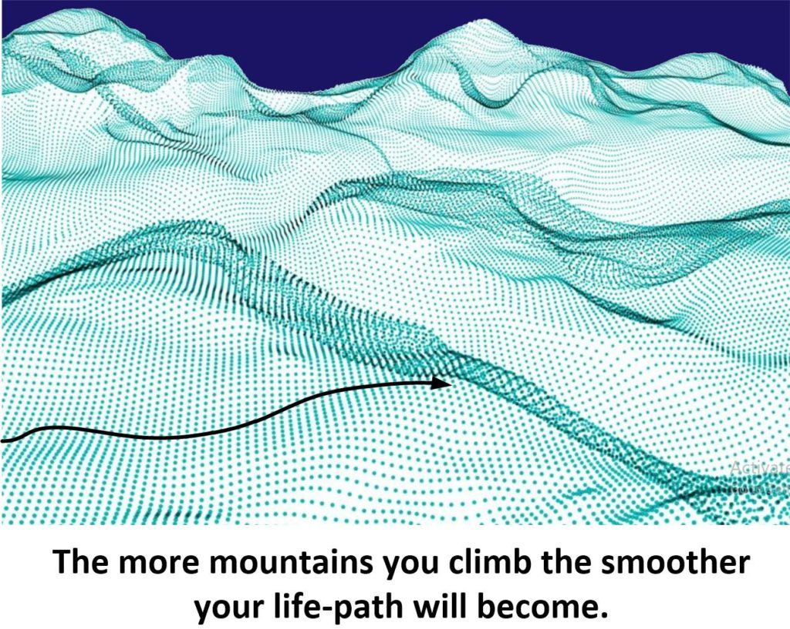
So what is the point?
If you try to push and strive to do the more or less uncomfortable things in your life, you will actually, in the long term, make your life run smoother.
Instead of always going to and from work in your car, how about taking a little detour one day, and pulling into a diner and getting their blue plate special. It’s not a real mountain, but it’s a sizable hill. And it will make a difference.
If you always go and get McDonald’s coffee and then come home, how about next time bringing a creamer and a stirrer for your little kitties at home.
If you always eat at that restaurant down the street and order the food that you have become comfortable with, how about trying a different restaurant elsewhere. Maybe you will not like the food. So what? The mere fact that you step outside of the limitations of comfort means that you are climbing those hills.
And it doesn’t have to be hard, difficult, or distasteful either. It just should be different…
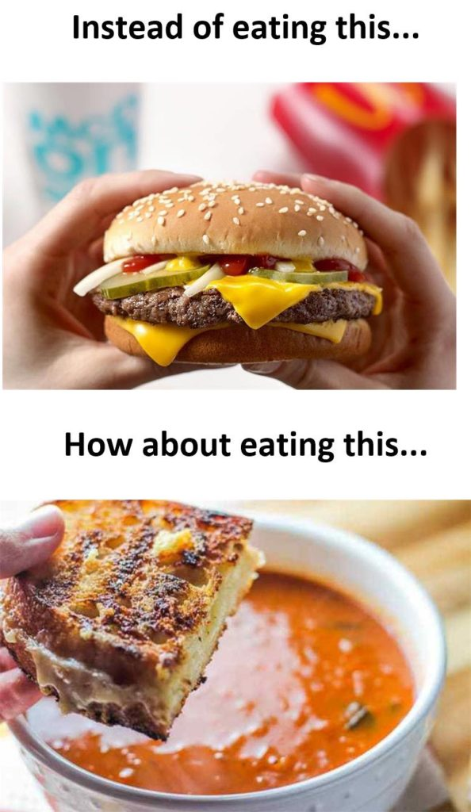
If you want change, then get out of your comfort zone…
Which pretty much is a central theme in all of this.
It doesn’t need to be much. But any change is good because it means that you are moving away from the common, and towards more interesting objectives.
I would suggest small steps…
If you are wearing a corporate uniform of a white shirt and a red tie, then replace one of the white buttons on the shirt with a green one. (Oh, boy! Will that make a difference!) . Go to a animal shelter and adopt another furry friend to your household. . Go one week soda free (if your habit is to drink soda). . If you always use the regular gas, next time put high-test in the car. Go with the "good stuff". . Buy a cup of coffee for a co-worker. . Put a thank-you note in your mailbox for the mailman. (Mail-person?) . Add some "whimsy" to your front lawn, or change the paint on your front door. Make it bright Red, or Pista.chio, or Robin's egg blue. . Plant a tree in your yard. . Visit a place that you haven't been to "in ages".
You see, it’s not that difficult to make changes. You just need to try something new and different.
OK. So now the glossary
I have come to bantering these terms so often that new-comers are often very confused. I think that glossary would be in order.
Time
Time does not really exist. Instead, what we refer to as “time” is actually the events that a consciousness experiences. It wakes up, brushes it’s teeth, eats breakfast, gets in the car… and so on and so forth.
That is what the consciousness experiences.
It is a straight “arrow of time” starting with getting up, and all the subsequent events. It is unique to the consciousness experiencing it.
Every consciousness experiences their very own versions of “time”. And there is no real unified time. Rather just the unified (apparently) measurement of it. With clocks, watches, etc.
Life-Line
A “life-line” is a collection of experiences that a consciousness has. As the consciousness moves in and out of individual moments of time, it creates a path. This path looks like a vector. It starts at the moment of birth and ends at the moment of death.
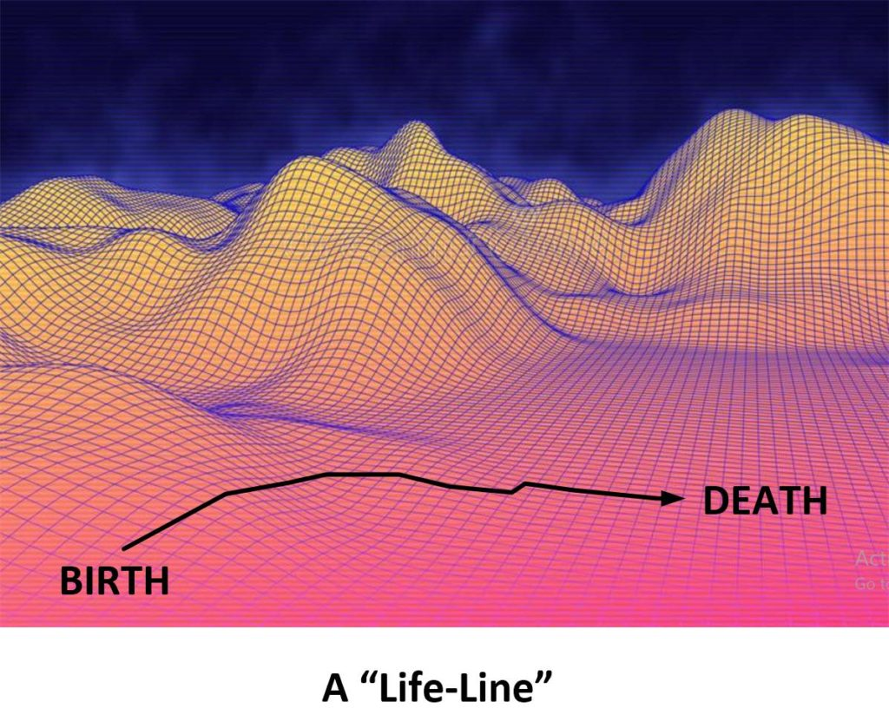
Time-Line
A “Time-Line” is ALMOST the same thing as a “Life-Line”.
Except that the Life-Line encompasses the entire realm of experiences from birth to death, whereas a “Time-Line” is a much shorter period and may or may not include birth or death events.
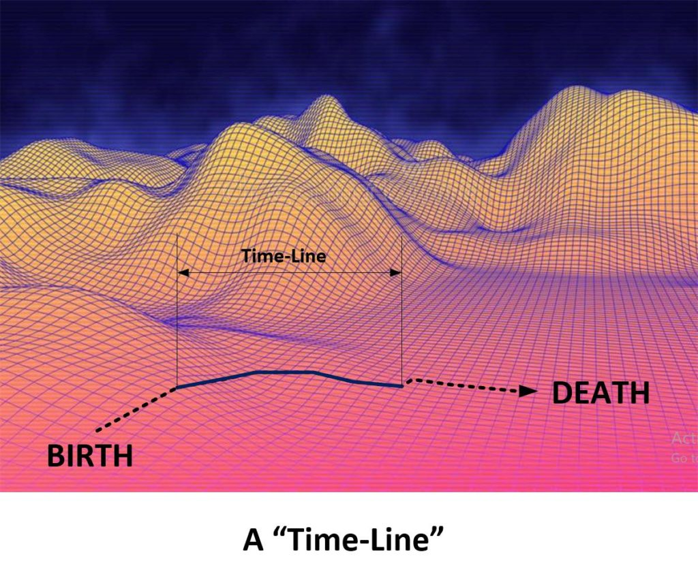
World-Line
A “world-line” is a frozen moment. Nothing moves. Nothing goes on. It’s just like a photograph. Only it is a 3D photograph of the entire universe.
The term “world-line” comes from Science Fiction novels and movies. These fictions depict another reality that differs from the one that the person was just in. As example, in “Back to the future II”, a pair of time-traveling explorers alter history, with horrible consequences.
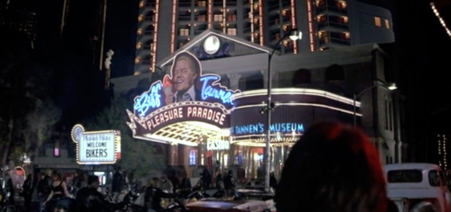
As far as using the world-line map template, each intersection point, dot or globe represents one such world-line. As in this here…
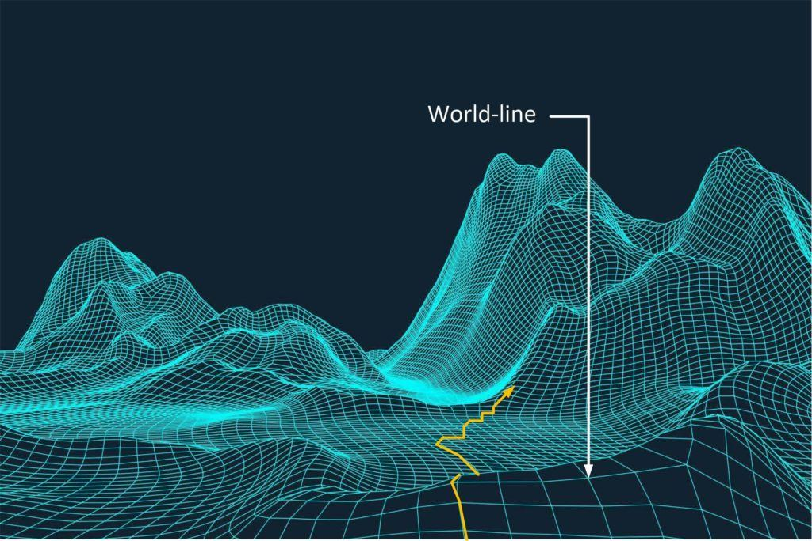
World-Line Cluster
As the consciousness travels on the MWI it does so based upon it’s thoughts. If others share the same thoughts, they travel the MWI in a similar manner.
If you map out the Time-Lines of people who are sharing similar thoughts, you will find that they seem to travel together, and they seem to experience the same World-lines.
This is known as clustering.
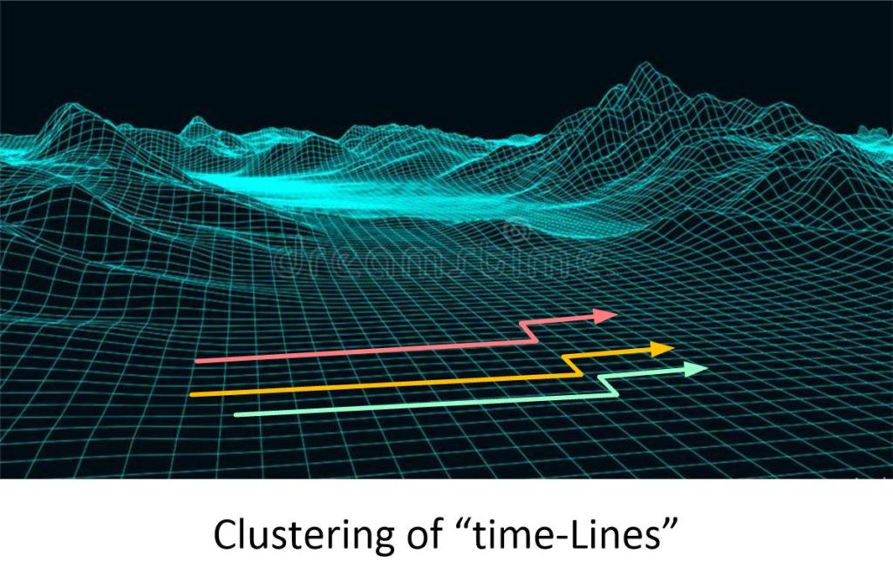
Echo Chamber
If you only listen to a certain type of “news”, and only receive your input from others that agree with you, the thoughts that you have will be reinforced into one set staid narrative. You will be unable to think other thoughts. And as such, your thoughts will be controlled by whomever, or whatever controls the narrative that you are immersed in.
This environment; a closed environment where your thoughts are set to a “conformist setting” within that environment is dangerous. It locks your path and travel in the MWI to a set route.
In discussions of news media, an echo chamber refers to situations in which beliefs are amplified or reinforced by communication and repetition inside a closed system and insulated from rebuttal. By participating in an echo chamber, people are able to seek out information that reinforces their existing views without encountering opposing views, potentially resulting in an unintended exercise in confirmation bias. Echo chambers may increase social and political polarization and extremism. -Wikipedia
MWI
The many-worlds interpretation (MWI) is an interpretation of quantum mechanics that asserts that the universal wavefunction is objectively real, and that there is no wavefunction collapse. This implies that all possible outcomes of quantum measurements are physically realized in some "world" or universe. In contrast to some other interpretations, such as the Copenhagen interpretation, the evolution of reality as a whole in MWI is rigidly deterministic. Many-worlds is also called the relative state formulation or the Everett interpretation, after physicist Hugh Everett, who first proposed it in 1957. Bryce DeWitt popularized the formulation and named it many-worlds in the 1960s and 1970s. -Wikipedia
In short, it is the universe where everything is possible. And every single possibility exists somewhere in some form. And I refer to these variations as “World-lines”.
Template Map
A template map is a method to visualize movement in the MWI.
A topographical map of a mesh is created. Each intersection of that mesh is a “world-line”.
The surface of this map is the HIGHEST LIKELIHOOD of movement of a given consciousness within a physical body.
The height of the topography is a measure of the difficulty in likely movement. This a flat surface is easy with no difficulty and effort. And a “mountainous” feature depicts enormous difficulty and strife.
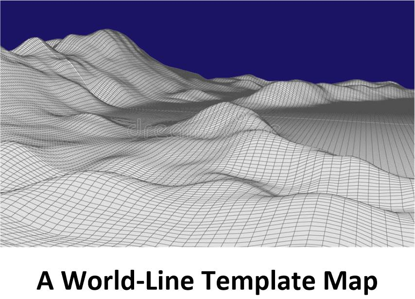
Which now brings us to…
Pre-Birth World-Line Template Map
This is the very first template map that is established when a baby is birthed, and a consciousness is injected into the body.
It is called a “pre-birth” World-line template map because the template was painstakingly set up in place carefully for the consciousness to obtain experiences on it.
It is a carefully constructed fated life.
The easiest map paths are laid out for the consciousness to explicitly experience and enjoy certain events. And that is both good and bad events.
The only way off this map is to “slide” off of it, on to a different template map.
Slide
A slide is an intentional change of the template map.
You “slide” off the map that you are on, and land on a completely different map.
While this is possible with artificial contrivances, equipment, electronics, vehicles and the like, the most effective way to do so (on a personal basis) is to do it by thought.
You specifically control your thoughts in a concise and directed manner to slide off your template map.
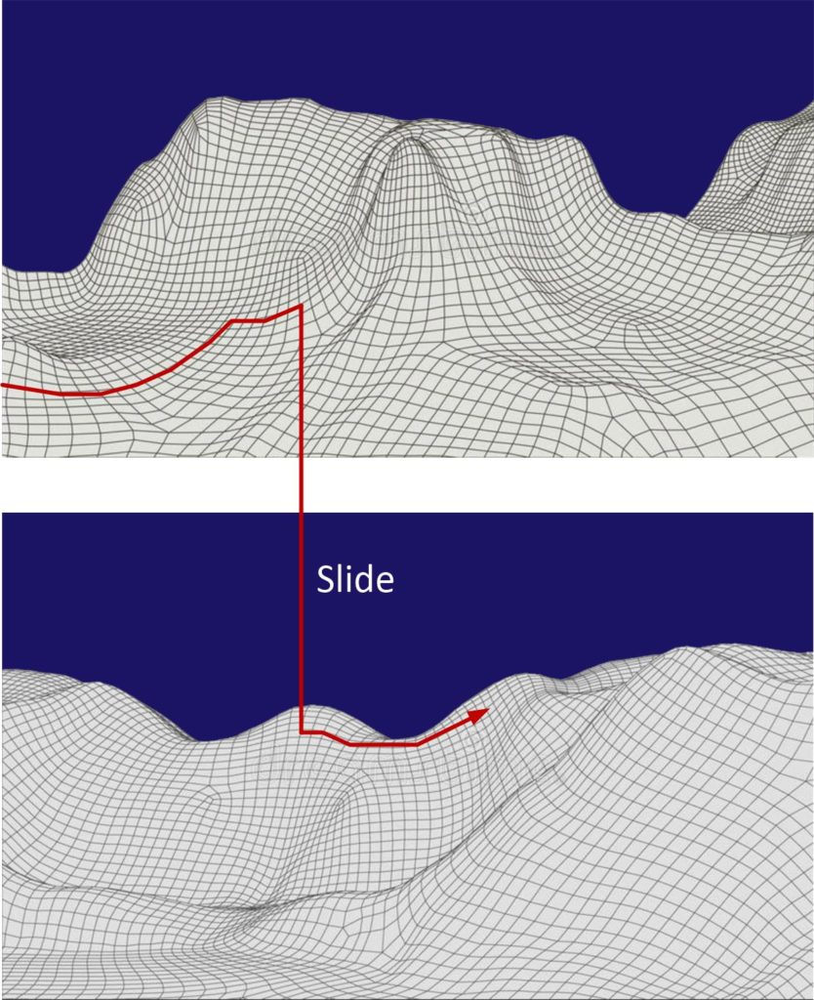
Shadow People
We (as consciousness) travel the world-lines alone. It is extremely rare for another consciousness to share a world-line with us.
Thus all those “people” that we see are actually not like us. They don’t have a consciousness like we have. They are real to us, and they have feelings that we react to, but their consciousness is elsewhere on their own world-line somewhere else, and what we see is a “shadow” of them.
A “mountain”
On the topography of a world-line template are “highs” and “lows”. These features define the difficulty of effort to move in those directions. A “mountain” is a particularly difficult are to traverse. And on the 3D map it will appear as a mountain.
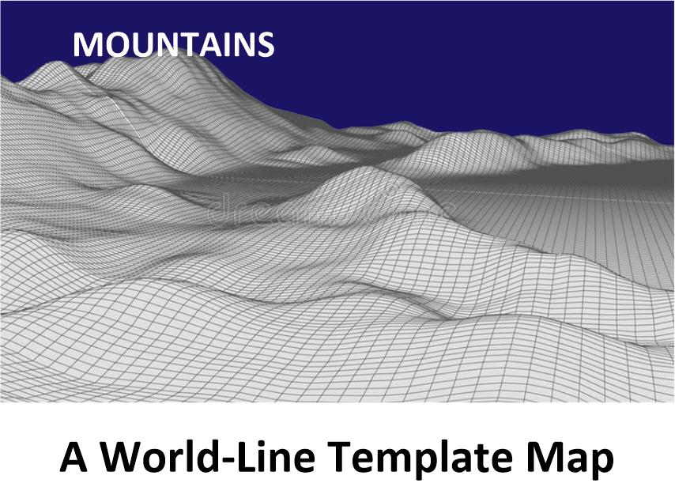
A “hill”
A hill is similar to a mountain. It’s level of difficulty to traverse is proportionally smaller.
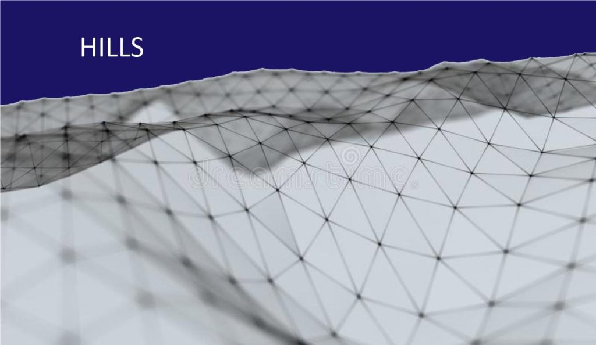
Comfort Zone
By all practical purposes, the flat and level area is always your comfort zone. You can always find a comfort zone on your pre-birth world-line template map, no matter how mountainous the terrain before you appears. This is the “fated” path that you established for your self when your soul first established the pre-birth world-line template.
This is good and bad. But in general, it means that there is always a default action that will lie ahead of you. Good or bad. You might end up saying “There’s a kind of calmness knowing that you are 100% fucked no matter what you do.” Or, you might say, “You know, if I just keep on doing what I am doing, everything will work out”. It all depends on your individual situation.
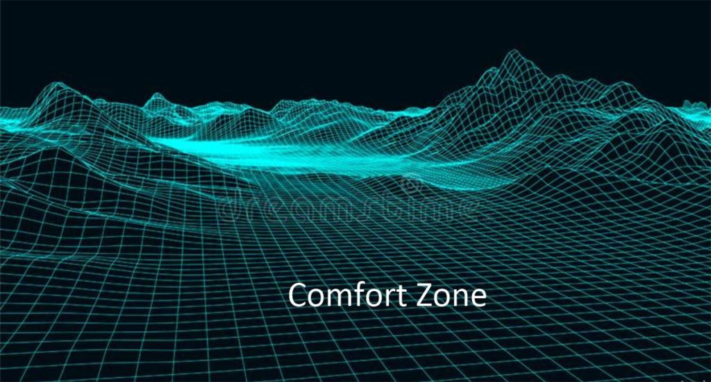
Affirmation Campaign
An affirmation campaign is a specific technique that you use to navigate on the world-line template. It is a way to direct your thoughts when moving from world-line to world-line on your MWI template map. It’s a powerful skill set. You can go visit my entire index of articles here…